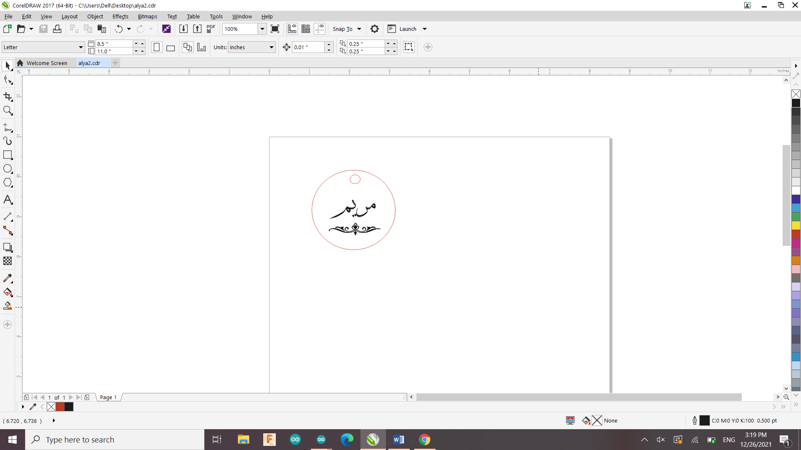

Computer Controlled Cutting
We were introduced to a laser cutting machine at the beginning of this week. Laser cutting is a manufacturing process in which a narrow, focused laser beam is used to cut and etch materials into specified shapes, patterns, and forms established by a designer. Ohood, a previous Fab Academy student, gave us a quick overview of the laser machine and demonstrated how to operate it.
We were tasked with designing and lasercutting something. I choose to make a medal key. This is my first time using a laser cutter, so here are the design steps:
1- I designed the medal key using CorelDrew software. I marked the elements that I want the machine to cut in red and the elements that I want to engrave in black.

2- I used the Universal Laser Sysytem machine and set the settings for MDF coated material.

3- Before taking off the design , we should wait for 30 seconeds so the smoke does not go out.
4-This is the final product
Group assignment
We were given the task of selecting one material and modifying the default parameters (speed and power) to observe how it affected the cutting and engraving.
I decided test the white cast acryllic material .I created a small test design to determine the appropriate speed and power level for the chosen material. I accomplished this by doing four trials.
First trial
In this trial , I used the default setting of Cast Acrylic in the Universal Laser machine. The cutting was so good but the engraving was not very clear.
| Setting | Speed | Power |
|---|---|---|
| Engraving (black) | 100% | 26% |
| Cutting (red) | 5.8% | 100% |
Seconed trial
In the Seconed trial , I increased the speed of the cutting to 50 % and the power of engraving is increased to 85%. The cutting was too fast and it can be seperated from the plate and The engraving is too much and the material turned to grey .
| Setting | Speed | Power |
|---|---|---|
| Engraving (black) | 100% | 85% |
| Cutting (red) | 50% | 100% |
Third trial
In the Third trial , I decreased the speed of the cutting to 20 % and the power of both engraving and cutting is changed to 70 %. The engraving is the same is not that good and also I can not seperate the cut.
| Setting | Speed | Power |
|---|---|---|
| Engraving (black) | 100% | 85% |
| Cutting (red) | 20% | 70% |
Forth trial
In the forth trial, The power of the engraving is decreased to 50 % and the cutting to 55 % . The speed of engraving kept constant and for cutting is decreased to 15 %. The engraving is good and clear but still the cutting is not good.
| Setting | Speed | Power |
|---|---|---|
| Engraving (black) | 100% | 50% |
| Cutting (red) | 15% | 55% |
Fifth trial
In the Fifth trial, only the speed of the cutting is decreased to 5% and other paramaters did not changed.The results are pretty good, the material is seperated so easily.
| Setting | Speed | Power |
|---|---|---|
| Engraving (black) | 100% | 50% |
| Cutting (red) | 5% | 55% |